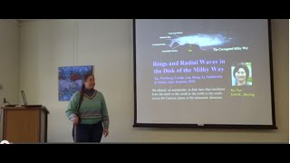
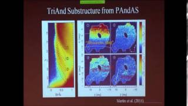
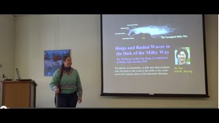
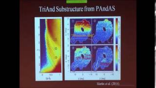

Circle versus rectangle: finding ‘Earth 2.0’ may be easier using a new telescope shape 9/1/2025 press release. Click image for higher resolution. Caption for press release image: Concept design for a rectangular space telescope, modeled after the Diffractive Interfero Coronagraph Exoplanet Resolver (DICER), a notional infrared space observatory, and the James Webb Space Telescope. Credit: Leaf Swordy/Rensselaer Polytechnic Institute.
Research Overview: My current research is primarily related to understanding the structure of our own galaxy through using stars as tracers of the Galactic halo and the disk. In both cases I have been instrumental in elucidating their substructure. I hope that these studies will contribute to our understanding of how the Galaxy formed. In addition, the stellar substructure in both the halo and in the disk can be used to determine where dark matter is located in the Milky Way galaxy.
I currently run MilkyWay@home . I am also working on a telescope design that uses a giant diffraction grating to collect light instead of a large mirror; this design might allow a giant, light-weight telescope to be unfurled in space.
You can follow my research on facebook, twitter, instagram and YouTube. More information on past accomplishments can be found on Wikipedia
I was a participant in the Sloan Digital Sky Survey, from 1992 to 2008. This survey imaged 10,000 square degrees of the north Galactic cap in five optical filters. Additionally, it obtained a million spectra of the galaxies (and hundreds of thousands of QSOs and stars) that were detected in the imaging survey. I am also a participant in the Chinese LAMOST spectral survey of millions of Galactic stars, and led the US participation (Participants in LAMOST, US -- PLUS) in the design of that survey.
I have worked in many areas of astronomy over the course of my career. I did my PhD with the Berkeley Automated Supernova Search, which measured the supernova rates as a function of supernova type in Virgo-distance galaxies; and the Supernova Cosmology Project, which is measuring the cosmological parameters Omega and Lambda using the light curves of distant supernovae. I have published papers in diverse areas of galactic and extragalactic astronomy, including: supernova phenomenology, measuring cosmological parameters from supernovae, galaxy photometry, color selection of QSOs, properties of stars, and the structure of our galaxy.
Dept. of Physics, Applied Physics, and Astronomy For kids and non-scientists (1 min)  For science-interested public (20 min)  For astronomers (50 min)
For kids and non-scientists (1 min)  For science-interested public (20 min)  For astronomers (50 min)
BIBLIOGRAPHY, provided by the SAO/NASA Astrophysics Data System (ADS) abstract server
{kind=link}
{kind=link}
{kind=link}
{kind=link}
{kind=link}